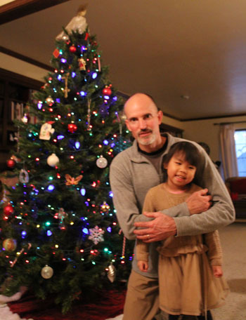
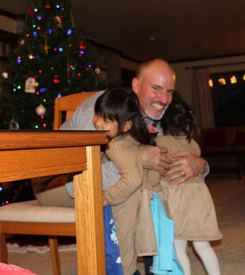
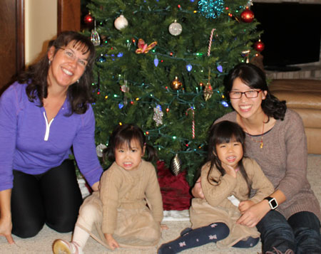
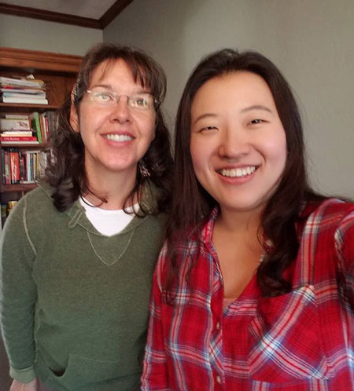
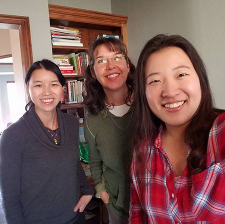
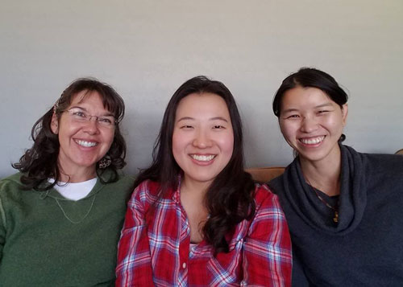
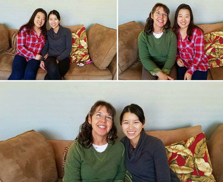
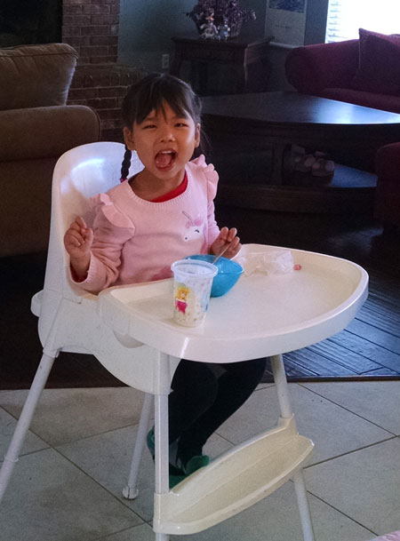

December 2016
| I wasn't good about capturing all of the
Christmas visits I had with friends during this time, but I did get a few
of them. It was wonderful catching up with my friends. I love
Christmas! |
|
| Isabel, looking completely adorable in front of our tree | Closer view of her cuteness |
 |
 |
| Blurry shot of Isabel & Uncle Eric. Melody is still warming up to him. | Melody was willing to give him a hug if Isabel went along too. |
 Me, Melody, Isabel, and Jiayi. So nice to be together again! |
 |
| Speaking of together again, here's a blast from the past! My good
friend Ellie now lives in California so I don't get to see her very often, but thankfully she came in for a Christmas visit. We went to Jiayi's house for an afternoon of hanging out together. |
|
 |
 |
| Jiayi, me, and Ellie - together again! | Lots of selfie group pictures follow, fun for us! |
 |
|
 |
|
| Isabel, hamming it up. This girl is a spitfire! | I also enjoyed an afternoon with Rachel. She took me out for pie, it was delicious. |